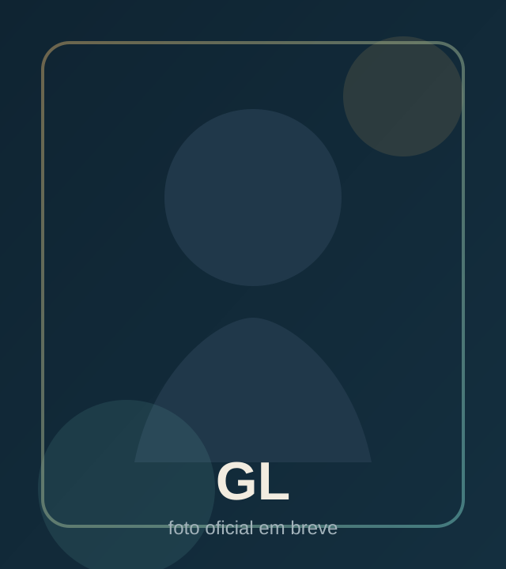
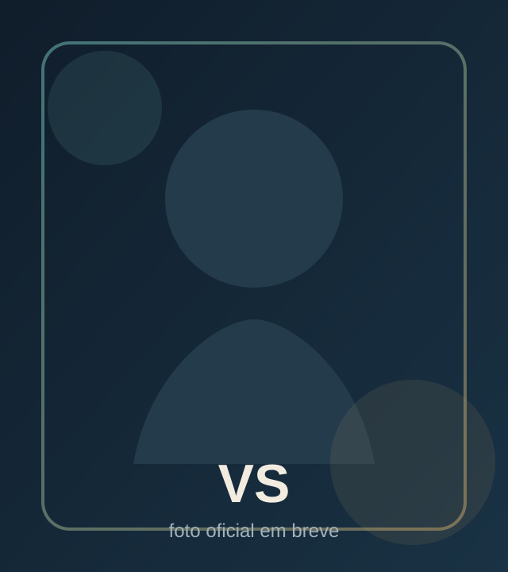
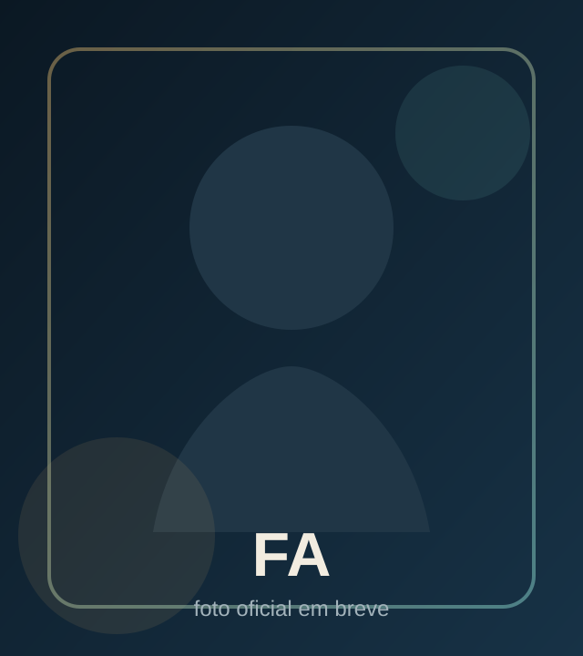

Três eras em sequência
A primeira campanha começa na idade média, avança para os tempos atuais e só depois libera o futuro. Ao concluir um capítulo, você pode iniciar novas runs direto daquela era.
Estratégia, política e simulação em primeira pessoa
Em ImperIA, cada decisão redefine o destino da sua população. As leis mudam, o mundo muda, o gabinete muda e você atravessa três eras tentando não perder o controle do próprio poder.
Visão do jogo
ImperIA mistura gerenciamento, decisões legislativas e leitura de cenário para criar campanhas em que nenhum mandato segue o mesmo roteiro.
A primeira campanha começa na idade média, avança para os tempos atuais e só depois libera o futuro. Ao concluir um capítulo, você pode iniciar novas runs direto daquela era.
O gabinete acompanha a situação econômica da sua civilização. O mesmo poder pode parecer grandioso ou decadente dependendo do estado do país.
Natureza, guerra, clima, economia e saúde aparecem como forças vivas durante a campanha e exigem respostas rápidas, políticas e muitas vezes impopulares.
Progressão
O coração de ImperIA é a travessia temporal. O jogador aprende a governar em contextos completamente diferentes sem perder a continuidade política do seu mundo.
Nobres, clero, fome, fronteiras vulneráveis e estruturas frágeis. Aqui o poder é físico, simbólico e brutal.
A pressão muda de rosto: imprensa, opinião pública, empresas, orçamento e desgaste institucional passam a ditar o ritmo do governo.
Tecnologia demais não elimina o caos. Só muda o formato do risco: corporações, vigilância, sabotagem e desigualdade escalam junto com o progresso.
Sistemas centrais
Você não administra só números. Administra símbolos, conflitos, aliados, medo popular, ego político e consequências que demoram a aparecer.
A mesma proposta pode ser razoável em uma campanha e desastrosa em outra. Tudo depende do mundo gerado, da era em que você está e do estado atual do país.
Em uma run seu território pode nascer cortado por um grande rio; em outra, água é justamente o recurso mais raro. O cenário altera os desafios de base.
Desastres naturais, invasões, crises econômicas, doenças e oportunidades inesperadas podem forçar mudanças radicais na forma de governar.
Além de sobreviver politicamente, você recebe objetivos que puxam seu governo para caminhos específicos e ajudam a definir o tipo de líder que você se torna.
Gabinete e atmosfera
Castelo, prefeitura ou escritório futurista: sua sala muda conforme a era e o nível de prosperidade da civilização. O pano de fundo não é decorativo, ele conta como você está governando.
Além das variações econômicas, a sala pode receber personalização de paredes, bandeiras e elementos visuais que reforçam a identidade do seu governo ao longo da campanha.
Vice-presidente
O vice acompanha as três eras, mantém nome e aparência base, muda de roupa com o tempo e interfere no seu governo de acordo com a própria personalidade.
Ele pode melhorar uma lei específica poucas vezes, sem apagar o risco da decisão.
Crises inesperadas podem chegar primeiro pela boca dele, junto com escolhas imediatas.
Em vez de revelar tudo, ele sugere direções: militares irritados, ciência acelerada ou desgaste popular.
Em certos momentos o vice apresenta propostas dele mesmo e observa como você reage.
Leal, ambicioso, populista ou tecnocrata. O jeito dele muda o tipo de ajuda, conflito e replay.
Pressão constante
Vitória e derrota não são só uma tela final. Elas emergem do estado da população, da sua imagem, das finanças e dos caminhos que você escolhe seguir.
Sobre nós
A seção já está pronta para receber as fotos oficiais da equipe. Enquanto isso, os cards usam imagens locais simples para facilitar a troca quando vocês quiserem atualizar.



Contato
O canal principal de contato do jogo é contato@playimperia.games.